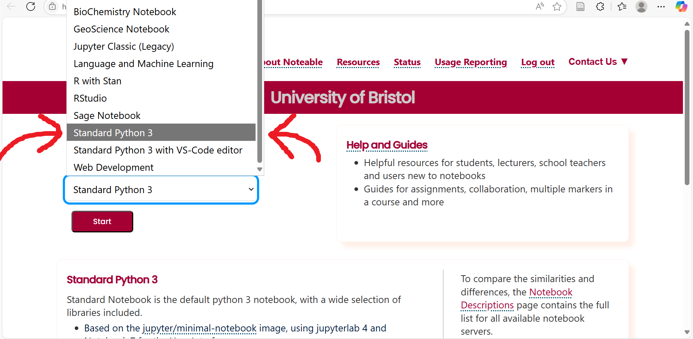

Intermediate: Match Statements
Welcome to the Week 2 Intermediate Python Notebook. This notebook is designed for students who already have some experience with Python and are ready to build on the basics.
Your task today is to read through the material carefully and complete the exercises provided at the end. These exercises are designed to deepen your understanding and give you practical experience with new concepts.
Important: Before starting this notebook, make sure you are confident with everything in the
Beginnernotebook. You should be comfortable working with theifstatement and attempt at least \(4\) of theBeginner exercises. The material in this notebook builds directly on those foundations.
In this notebook, you will explore a recent addition to Python: the match statement; a powerful tool for handling multiple conditions, particularly useful when your programs need to deal with many different cases.
Be sure to work through the examples and attempt all the exercises. They are designed to help you practice, reinforce your learning, and prepare you for the more advanced topics ahead.
Table of Contents
Important: This notebook includes features that were added to the Python programming language in Version 3.10. For this reason, if you want to run the code in this notebook you need to select Standard Python 3 rather than Jupyter Classic (Legacy) when opening Noteable. This will result in a slightly different interface opening. If you are confused by the new interface, please ask the lecturer or one of the demonstrators to help you get to grips.

What is a match Statement?
The match statement is a relatively new addition to Python, having been added in Python 3.10 in 2021. This statement can be used to compare the value of a variable to different many different patterns. When it finds a match, the code inside the corresponding case block runs.
This is similar to using lots of if/elif checks, but can be cleaner and easier to read.
Here’s a simple example:
The above code tells us what to do if we see a specific color at a traffic light. In the code, we provide the color we have seen as a string (which has been set to "red" in the above) and the match statement will consider a number of cases one at a time, checking whether the color variable matches the value for that case. When it finds a match, it runs the code inside that case block.
Note that in the final case we have an underscore, _. This simply means “match anything that hasn’t already matched.” You can think of it like the else at the end of an if/elif statement. It serves as a “catch-all” to deal with any unexpected or unhandled values.
Test your understanding: How might you modify the above code to allow case-sensitive examples such as
color="ReD"orcolor="GreEn"? Hint: recall thelower()function from the beginner notebook in Week 1.
Sometimes, you may want several different inputs to trigger the same response. In such cases, instead of writing out separate case blocks for each value, we can group them together inside a single case using the pipe symbol, |. This lets us list several alternatives side by side, and if the variable matches any one of them, that case is chosen.
For example, in the below code we group “Saturday” and “Sunday” together, since both are weekend days:
Converting Long elif Statements to match
One of the biggest advantages of the match statement is how cleanly it handles data with complex structures.
Suppose we want to represent different 3D solids using dictionaries. For example:
Note: If you are not yet comfortable with dictionaries, please review the week 1 intermediate notebook on
collections. There you will find introductory material on thedictdata type.
Here, solid_data describes a cylinder with a given radius and height. We might also store information for other solids:
Each solid requires different keys: a sphere has only a radius, a rectangular prism has width, height, and depth, while a cylinder needs both radius and height.
Now imagine we want to compute the volume automatically, regardless of which solid is described. A natural first attempt is a long chain of if-elif-else statements:
While this works, it quickly becomes unwieldy. Each branch requires lots of repetition (.get(), nested ifs), and adding new shapes means adding even more clutter.
The match statement for this task is much simpler. This is in part due to some useful syntax; we can unpack the values inside the dictionary immediately, without using the .get() function as shown below:
This is much cleaner:
- No need for repeated
.get()calls - No nested
ifchecks - Simple, readable
casesyntax
And adding a new solid is now as simple as writing one more two-line case.
Combining match and if
Another helpful feature of the match statement is that it can be modified to include conditionals, using an if guard. This works a lot like an if statement and allows you greater control over when cases are executed. The general syntax is:
match variable:
case pattern if condition:
# code to runHere the code will be run if and only if the variable matches the pattern and the condition is satisfied.
For example, suppose we’re working with points in 2D space, which we write as a tuple and wish to describe whether they lie on the cartesian axes. Then we could do the following:
Exercises
Question 1: Extend the match statement in the Combining match and if section so that it not only handles points on the axes, but also describes points in each of the four quadrants (upper right, lower right, lower left, upper left).
Hint: A 2D point lies in a quadrant when both \(x\) and \(y\) are nonzero. Use if guards to distinguish whether each coordinate is positive or negative.
Question 2: Convert the below if-elif-else statement to a match statement:
Question 3: You are given two numeric variables, a and b, along with an operator stored as a string ("+", "-", "*", "/"). Use a match statement to apply the correct operation and display the result.
For example, if operator = "*", the program should calculate and store my_result = a * b. If the operator is not one of the four listed above, your code should print "Invalid operator".
Question 4: The variable account stores a tuple (balance, currency), where balance is the amount of money a user has and currency is the unit of that balance. The unit will be one of "USD", "EUR", "GBP", or "JPY". Your job is to convert this balance into another currency, stored in the variable target_currency (again, one of the four listed above).
Write a Python program using match statements to:
- Convert
accountinto the requestedtarget_currencyusing the exchange rates provided below.
- Print the resulting balance, formatted with the correct symbol:
"USD"→"$"
"EUR"→"€"
"GBP"→"£"
"JPY"→"¥"
If either currency (from account) or target_currency is not one of the four supported codes, print "Unsupported currency".
Note: You will have to look up the current exchange rates online (you need only use three significant figures for the conversion).
Hint: You may wish to use two match statements for this task; one converting to a single currency, say GBP, and another converting from GBP to the desired output currency.
If you are unsure what a Tuple is, please revisit the week 01 intermediate notebook on collections.
Question 5: In digital images, colors are represented using RGB values. An RGB value is a 3-tuple (r, g, b) that gives the intensity of the red, green, and blue components of a color, each ranging from \(0\) to \(255\). For example, \((255, 0, 0)\) is bright red, \((0, 255, 0)\) is bright green, and \((0, 0, 0)\) is black.
Write a program that takes an (r, g, b) tuple as input and uses a match statement to classify the tuple into one of the following color names:
Redifris greater than200and bothgandbare less than50.Greenifgis greater than200and bothrandbare less than50.Blueifbis greater than200and bothrandgare less than50.Unknownfor any other combination.
The color name should be saved as a string variable named color_name. Write your solution in the box below.
Hint: You may wish to use if guards for this question.